PWD GIS
Brief
In Fall 2015, I was asked to redesign the GIS (Geographic Information System) module of CIPAce™ for the Philadelphia Water District (PWD). The software was originally built with Adobe Flex, and we upgraded it to HTML5. Most functionalities were migrated, and several new features requested by PWD were incorporated. The goal was to provide an easy-to-use platform for utility project managers to visually identify and manage planning phase projects on the new GIS platform.
User Research
Due to geographical and schedule constraints, our user research began with Document Analysis and Competitive Analysis. Analysis results were communicated to client, and interviews were conducted subsequently to gather their concerns on usability of the existing system.
Document Analysis
Evaluating historical requirement analysis document, user manuals and video recordings of PWD's existing GIS system allowed us to better understand the challenges they faced in managing a vast amount of information on the GIS platform. We identified several major scenarios from the documents to help users focus on the most critical tasks at hand.
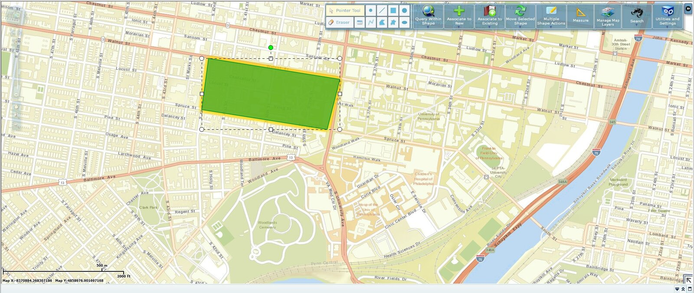
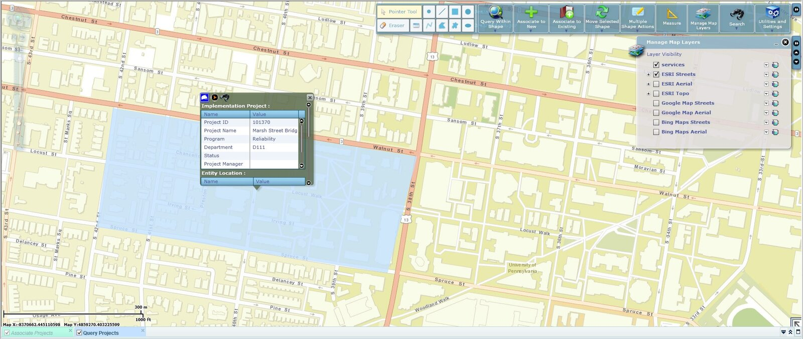
Competitive Analysis
We investigated commonly used map products in the market to look for current trends and best practices. Many of them started with a searching feature and a very clean layout. Relevant features were either stacked or triggered by user inputs, which was good for keeping away distractions upon a given task.
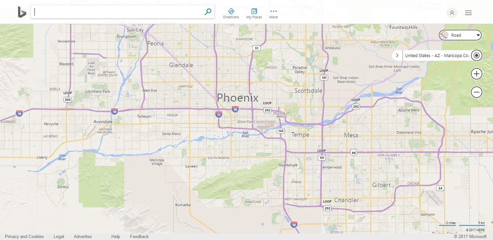
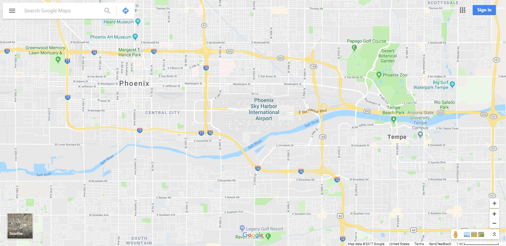
Interview
After the Competitive Analysis, we conducted several interview sessions with the project managers and other business analysts to identify gaps between analysis results and expectations. They mentioned that many system users would initiate a project from a particular address, and subsequently include relevant geographical features into the project based on that address. So, we needed to create a way for users to dynamically select and group geographical visually on the map for future use.
Ideation
Based on our findings, we came up with a matrix of user requirements and some rough sketches to determine the most important features we needed to include in the first draft.
User Requirements
We made a list of items to track business requirements, stakeholder requirements, solution requirements and transition requirements. Prioritization techniques were used to determine the relative value of such requirements and the scope of our project. According to the matrix, Address Searching, Geo-feature Selection & Query and Proposal/Project Creation with Geo-feature were identified as the functionalities that should be delivered first.
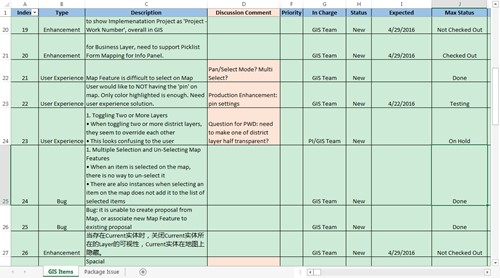
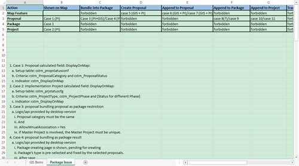
Prototype
After the ideation stage, we began to iterate our design with paper prototypes + wireframes and verified them with the users. Their feedbacks clarified several assumptions we'd made in the earlier drafts and helped us improve the overall quality of our design.
Paper Prototypes
After a preliminary tracing and prioritization of user requirements, we made some paper prototypes for quick usability testing. To aid understanding, we'd also outlined the UI flows of several major tasks in the GIS application to help users validate the design concepts.
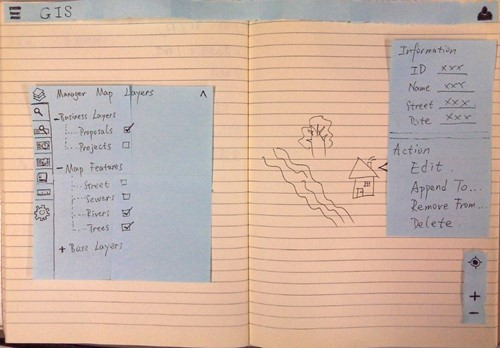
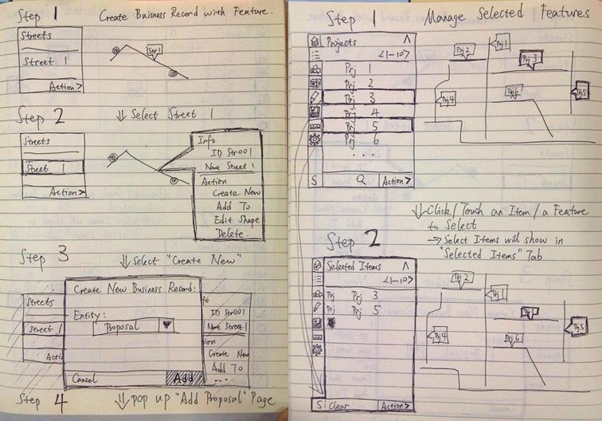
Wireframe
A few key components were settled through the wireframes – a function panel that aggregated all major functionalities stacked with vertical tabs, a feature panel that included geo-feature information and relevant operations, and a map operator at the bottom right providing GPS locating and zoom-in/zoom-out features. Subsequent iterations were based on this model, and a number of design changes were made regarding their layout and hierarchy.
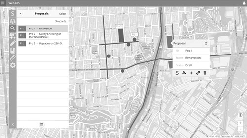
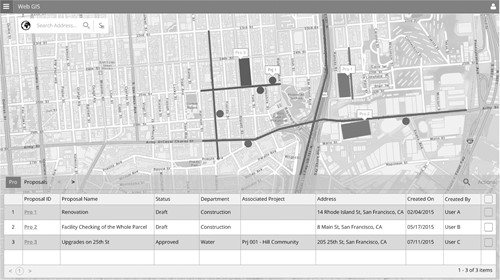
Participatory Design
A project manager contributed to our works by participating in the design of the function panel. We discussed the order of major functions/sub-functions within the panel, the direction of functions on the panel, and we relocated the entrance of some features to make it more compact and straightforward for middle-level system users.
User Testing
Once the UI framework was finalized, we compiled a working prototype and asked users to verify its visual aspects.
Based on user feedbacks, we adjusted the color schemes and refined the icons for each major function. The function panel was aligned to the left side of the application to leave out more screen space for the map. Shading and shadows were used to distinguish panels with map contents.
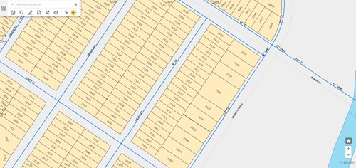
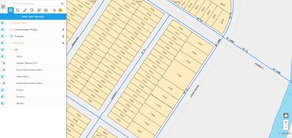
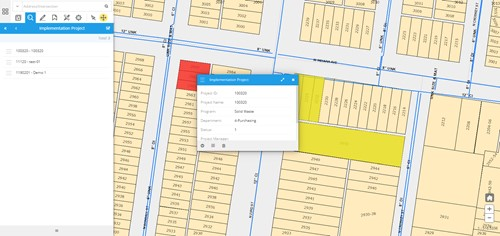
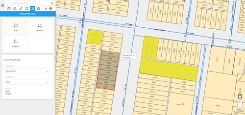
Reflection
The most challenging part of this project was that client had got used to their traditional way of using GIS. Therefore, we had to offer enough benefits, whether in functionality or usability, to acquire buy-ins from users and to convince them that this was a necessary change. It was not easy at first, especially when we introduced some rather novel scenarios into the application.
In all, it was a great experience. We were very glad that our design was accepted by the users, and It indeed helped them to better manage their projects.